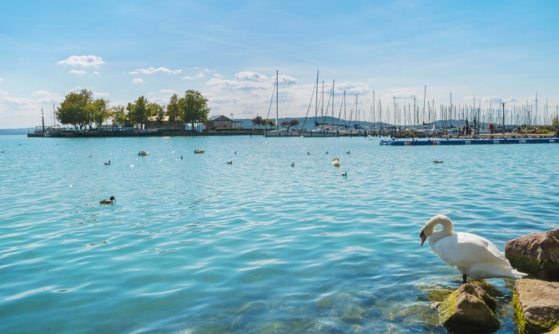

Have you ever seen the biggest freshwater lake in Europe? If not then this is your chance to get familiar with
the 77 km long and 7.7 km wide lake. It provides home for many kinds of fish, and water bird in Hungary. You
may even find a grass snake if you are lucky. This harmonous environment will pass by, as we ride. Be active
on your Holday! We have prepared the time-line of our upcoming tours. Additional information is available on
the Tours page. Be shure to check it out!
